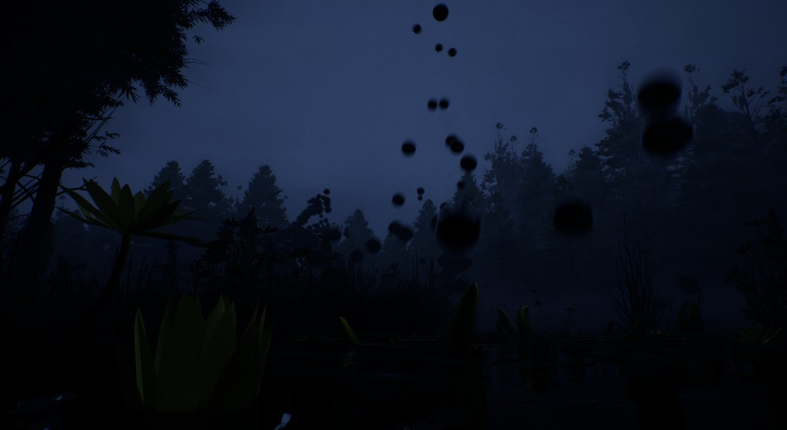
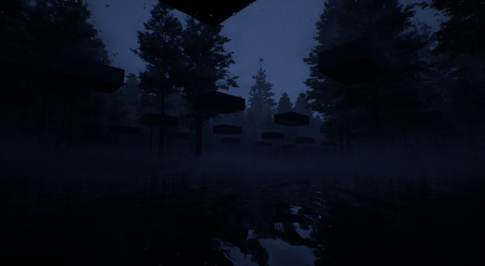
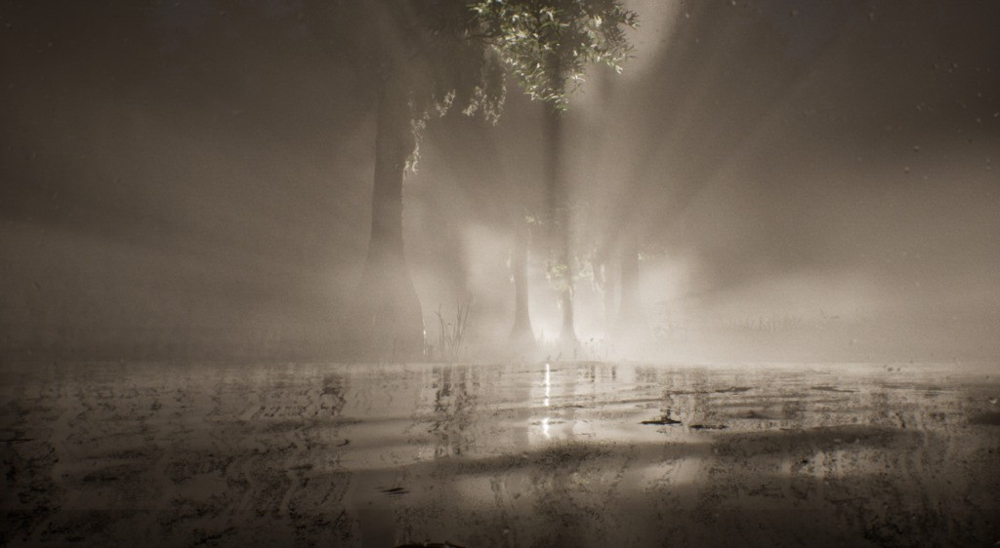
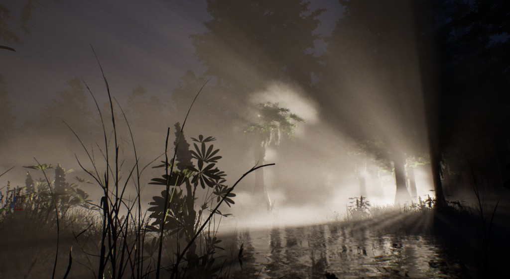

We Wade Awake
From dusk till dawn in the Bayou
{kind=link}
A collaboration between Boris Kourtoukov & Susanne Fernløf Arntzen
- Composer: Bernt Isak Wærstad
- Vocals: Labdi Ommes, Bernt Isak Wærstad
Introduction
We Wade Awake is a visceral, immersive experience that conjures the eerie atmosphere and mystique of the Bayou through a fusion of sound, image, and ritual. This performance is a journey into the heart of the swamp, where surreal landscapes, supernatural encounters, and primal rituals converge in unsettling wonder. We weave together threads of dreamlike narratives, ghostly apparitions, and hints of cosmic horror to create an experience that invites the audience to surrender to the unknown. As We Wade Awake into the darkness, the boundaries between reality and myth dissolve, plunging us into a world of eerie beauty and primal terror.
Excerpts
Format
We Wade Awake takes two forms: a 30 minute live performance, or an interactive installation.
Performance
The artists use MIDI input controllers to play the world of We Wade Awake. Rather than having total control over the character, they bring the Bayou to life. The events they activate and modify shift as the journey progresses, allowing them to play off the world, each other and the audience.
Installation
Instead of the artists controlling the world, the same MIDI controls can be explored by the audience. The world of We Wade Awake is built to loop back on itself, continuing the cycle from dusk to dawn.
Stills
{kind=link}

{kind=link}

{kind=link}

{kind=link}
